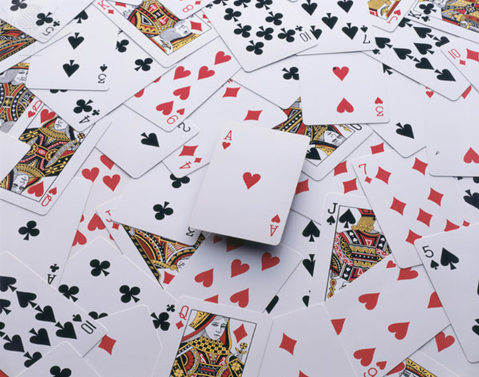

4.1 Probability Fundamentals
4.1 Probability Fundamentals
Upon completion of this section, you should be able to
- Define a sample space for a random experiment.
- Identify events for a random experiment.
- Compute theoretical and experimental probabilities for simple events.
Introduction
Many events in the world around us exhibit random patterns, but by repeated observations of such events it can often be seen to predict long-term patterns (despite random, short-term fluctuations). Probability is simply the branch of mathematics devoted to the study of these events. The probability of a specified event is the chance or likelihood that it will occur.
 |
What is the probability of a Head in a coin toss? How do you know that? |
There are several ways of viewing probability. One would be experimental (also called empirical) in nature, where we repeatedly conduct an experiment and assign the probability to be the ratio of times we observed the event to the number of trials in the experiment. Suppose we flipped a coin 1000 times and heads occurred 529 times. We could assign the probability of being a head on a flip as the ratio .
Another approach is more theoretical in that we use logic or knowledge about the experiment to assign a probability. For our coin example we could use logical reasoning to say that each side of the coin has the same chance of landing upright when flipped, so we would assign the probability as for being a heads. This theoretical value comes with some assumptions typically (the coin is balanced equally throughout, the player is not attempting to manipulate the toss, etc...). For those interested in how a coin flip may not be as fair as you think take a look at "The Coin Flip: A Fundamentally Unfair Proposition".
Another view of how to assign probabilities would be subjective in nature, in other words an educated guess. If someone asked you the probability that the Diamondbacks would win their next baseball game, it would be impossible to conduct an experiment where the same two teams played each other repeatedly, each time with the same starting lineup and starting pitchers, each starting at the same time of day on the same field under the precisely the same conditions. Since there are so many variables to take into account, someone familiar with baseball and with the two teams involved might make an educated guess that there is a 75% chance they will win the game; that is, if the same two teams were to play each other repeatedly under identical conditions, the Mariners would win about three out of every four games. But this is just a guess, with no way to verify its accuracy, and depending upon how educated the educated guesser is, a subjective probability may not be worth very much.
We will return to the experimental and subjective probabilities from time to time, but in this course we will mostly be concerned with theoretical probability.
Sample Spaces and Events
If you roll a die, pick a card from deck of playing cards, or randomly select a person and observe their age, we say we are conducting a random experiment, an action for which all possible outcomes can be listed, but for which the actual outcome on any given trial of the experiment cannot be predicted with certainty. In probability, we look at the likelihood of an outcome or a collection of outcomes that we call an event in the random experiment. We begin with some terminology.
Terminology
A random experiment is a mechanism that produces a definite outcome that cannot be predicted with certainty. The sample space associated with a random experiment is the set or collection of all possible outcomes. An event is any particular outcome or group of outcomes. When an event is made up of just one single outcome we call it a simple event.
Example 1
Construct a sample space for the experiment that consists of tossing a single coin.
Solution
The outcomes could be labeled h for heads and t for tails. Then the sample space is the set .
Example 2
Construct a sample space for the experiment that consists of rolling a standard single die. Find the events that correspond to the phrases “an even number is rolled” and “a number greater than two is rolled.”
Solution
The sample space is the set of all possible simple events:
The event “an even number is rolled” would be the collection of all even numbers. We will call this event E and would be:
The event “a number greater than two is rolled.” would be the collection of all numbers larger (greater) than 2. We will call this event F and would be:
The choice of the letter for an event is similar to the choice for a letter in a variable in an algebra application. We pick one that will hopefully help with the meaning of the event in terms of the application. The letter E was a natural choice for the event of an even number in the dice rolls, so it was used. The other event didn't have a natural choice so we picked a letter close to E and didn't have any inferred meaning in the application.
A graphical representation of a sample space and events is a Venn diagram, as shown below "Venn Diagrams for Two Sample Spaces". In general the sample space S is represented by a rectangle, outcomes by points within the rectangle, and events by ovals that enclose the outcomes that compose them.

A device that can be helpful in identifying all possible outcomes of a random experiment, particularly one that can be viewed as proceeding in stages, is what is called a tree diagram. It is described in the following example.
Example 3
Construct a sample space that describes all three-child families according to the binary genders of the children with respect to birth order. For simplicity we are only using the binary genders, but recognize there are those who identify as nonbinary.
Two of the outcomes are “two boys then a girl,” which we might denote bbg, and “a girl then two boys,” which we would denote gbb. Clearly there are many outcomes, and when we try to list all of them it could be difficult to be sure that we have found them all unless we proceed systematically. The tree diagram shown below "Tree Diagram For Three-Child Families", gives a systematic approach.

The diagram was constructed as follows. There are two possibilities for the first child, boy or girl, so we draw two line segments coming out of a starting point, one ending in a b for “boy” and the other ending in a g for “girl.” For each of these two possibilities for the first child there are two possibilities for the second child, “boy” or “girl,” so from each of the b and g we draw two line segments, one segment ending in a b and one in a g. For each of the four ending points now in the diagram there are two possibilities for the third child, so we repeat the process once more.
The line segments are called branches of the tree. The right ending point of each branch is called a node. The nodes on the extreme right are the final nodes; to each one there corresponds an outcome, as shown in the figure.
From the tree it is easy to read off the eight outcomes of the experiment, so the sample space is, reading from the top to the bottom of the final nodes in the tree,
Try it Now 1
A random experiment consists of tossing two coins. Write out the sample space assuming we can tell the difference between the two coins. What outcomes make up the event there is at least one head showing?
Answer
Probability
We have mentioned earlier for empirical probability that it represents a ratio of the number of times we observed an outcome over number of trials. With that in mind we will give a more formal definition along with properties that makes sense when we think of probabilities as a ratio.
Probability
The probability of an outcome e in a sample space S is a number p between 0 and 1 that measures the likelihood that e will occur on a single trial of the corresponding random experiment.
-
The value corresponds to the outcome e being impossible
-
The value corresponds to the outcome e being certain.
The probability of an event E is the sum of the probabilities of the individual outcomes of which it is composed. It is denoted .
If , then
"Sample Spaces and Probability" graphically illustrates the definitions.

Since the whole sample space S is an event that is certain to occur, the sum of the probabilities of all the outcomes must be the number 1.
In ordinary language probabilities are frequently expressed as percentages. For example, we would say that there is a 70% chance of rain tomorrow, meaning that the probability of rain is 0.70. We will use this practice here, but in all the computational formulas that follow we will use the form 0.70 and not 70%.
It is relatively straight forward to find probability is when all the outcomes have the same chance of occurring. For example experiments where each outcome has the same chance of happening would include the roll of a fair dice, flipping a fair coin, or even the results of a simple random sample from a population. Finding probabilities in these situations is just a matter or counting (as shown in the definition below).
Probability for Equal Likely Outcomes
Given that all outcomes are equal likely, we can compute the probability of an event E using this formula:
The " " notation we will be using reads "the probability of the event E occurring". In the notation P just means to find the probability and E is the event of interest.
Example 4
A coin is called “balanced” or “fair” if each side is equally likely to land up. Assign a probability to each outcome in the sample space for the experiment that consists of tossing a single fair coin.
Solution
With the outcomes labeled h for heads and t for tails, the sample space is the set . Since the outcomes have the same probabilities, which must add up to 1, each outcome is assigned probability . We could write these as and .
Example 5
A die is called “balanced” or “fair” if each side is equally likely to land on top. Assign a probability to each outcome in the sample space for the experiment that consists of tossing a single fair die. Find the probabilities of the events E: “an even number is rolled” and T: “a number greater than two is rolled.”
Solution
With outcomes labeled according to the number of dots on the top face of the die, the sample space is the set . Since there are six equally likely outcomes, which must add up to 1, each is assigned probability .
Since and this makes up 3 of the total 6 outcomes we have
Since and this represents 4 of the 6 outcomes we have that
Probabilities are essentially fractions, and can be reduced to lower terms like fractions as you saw in the examples, however we may not always do this as the unsimplified fraction may contain more information when reading it then the simplified answer. For instance in the example above we know there was six outcomes on the dice roll and the probability of rolling a number greater than 2 was found to be . If we leave the answer as we keep the information about how many outcomes out of the 6 made up the event rolling a number greater than 2.
Example 6
Let's say you have a bag with 20 cherries where 14 are sweet and 6 are sour. If you pick a cherry at random, what is the probability that it will be sweet?
Solution
There are 20 possible cherries that could be picked, so the number of possible outcomes is 20. Of these 20 possible outcomes, 14 are favorable (sweet), so the probability that the cherry will be sweet is .
There is one potential complication to the cherry picking example, however. It must be assumed that the probability of picking any of the cherries is the same as the probability of picking any other. This wouldn't be true if (let us imagine) the sweet cherries are smaller than the sour ones. (The sour cherries would come to hand more readily when you sampled from the bag.) Let us keep in mind, therefore, that when we assess probabilities in terms of the ratio of favorable to all potential cases, we rely heavily on the assumption of equal probability for all outcomes.
Example 7 
A standard deck of 52 playing cards consists of four suits (hearts, spades, diamonds and clubs). Spades and clubs are black while hearts and diamonds are red. Each suit contains 13 cards, each of a different rank: an Ace (which in many games functions as both a low card and a high card), cards numbered 2 through 10, a Jack, a Queen and a King.
-
Compute the probability of randomly drawing one card from a deck and getting an Ace.
-
Compute the probability of randomly drawing one card from a deck and getting a Diamond.
-
Compute the probability of randomly drawing one card from a deck and getting a black card.
Solutions
-
There are 52 cards in the deck and 4 Aces so
-
There are 13 diamonds in the deck, so
-
There are two suits that are black for a total of 26 cards, so
Try it Now 2
Two fair coins are tossed. Find the probability that the coins match, i.e., either both land heads or both land tails.
Hint 1
Answer
Probability when things are not equal likely
The previous examples illustrate how probabilities can be computed simply by counting when the sample space consists of a finite number of equally likely outcomes. In some situations the individual outcomes of any sample space that represents the experiment are unavoidably unequally likely, in which case probabilities cannot be computed merely by counting, but the computational formula given in the definition of the probability of an event must be used.
The probability of an event E is the sum of the probabilities of the individual outcomes of which it is composed. It is denoted .
If , then
Example 8
The breakdown of the student body Race and Ethnicity at Pima Community College in Fall 2020 was 37.33% white, 4.93% black, 47.16% Hispanic, 3.12% Asian, and 1.97% American Indian or Alaskan Native, 5.49% for all others (including undeclared). A student is randomly selected from Fall 202. (To select “randomly” means that every student has the same chance of being selected.) Find the probabilities of the following events:
-
H: the student is Hispanic,
-
N: the student is not Black.
-
M: the student is a minority (that is, not white),
Solutions
The student body's race and ethnicity is broken down into 6 different outcomes. We can write this out as a sample space of . The experiment is the action of randomly selecting a student from the student population at Pima. Since 47.16% of the students are Hispanic and all students have the same chance of being selected, , and similarly for the other outcomes. This information is summarized below:
| Outcomes | w | b | h | a | ai | o |
|---|---|---|---|---|---|---|
| Probability | 0.3733 | 0.0493 | 0.4716 | 0.0312 | 0.0197 | 0.0549 |
-
Since ,
-
Since ,
-
Since ,
In the last example the process for adding the probabilities together worked as the classifications of race/ethnicity didn't allow for any of the students to fall into more than one classification as well as all students would be captured into just one of them. If there were overlaps between two classifications we could not treat the probability question in the same way.
Try it Now 3
The student body in a local high school may be broken down into ten categories as follows: 25% white male, 26% white female, 12% black male, 15% black female, 6% Hispanic male, 5% Hispanic female, 3% Asian male, 3% Asian female, 1% male of other minorities combined, and 4% female of other minorities combined. A student is randomly selected from this high school. Find the probabilities of the following events:
-
B: the student is black,
-
MF: the student is minority female,
-
FN: the student is female and is not black.
Hint 1
Answer
Exercises:
-
Which of the following can be a probability value?
Answer
-
A box contains 10 white and 10 black marbles. Construct a sample space for the experiment of randomly drawing out, with replacement, two marbles in succession and noting the color each time. (To draw “with replacement” means that the first marble is put back before the second marble is drawn.)
For each event listed below write out the outcomes that make up the event. If we assume each outcome is equal likely find the probability of each event.
-
At least one marble of each color is drawn.
-
No white marble is drawn.
Answer
-
-
A box contains 16 white and 16 black marbles. Construct a sample space for the experiment of randomly drawing out, with replacement, three marbles in succession and noting the color each time. (To draw “with replacement” means that each marble is put back before the next marble is drawn.)
For each event listed below write out the outcomes that make up the event. If we assume each outcome is equal likely find the probability of each event.
-
At least one marble of each color is drawn.
-
No white marble is drawn.
-
More black than white marbles are drawn.
Answer
-
-
A box contains 8 red, 8 yellow, and 8 green marbles. Construct a sample space for the experiment of randomly drawing out, with replacement, two marbles in succession and noting the color each time.
-
No yellow marble is drawn.
-
The two marbles drawn have the same color.
-
At least one marble of each color is drawn.
Answer
-
-
Your sock drawer is a mess. Twelve black socks and six red socks are mixed together. What are the chances that, without looking, you pick out a red sock?
Answer
-
A ball is drawn randomly from a jar that contains 6 red balls, 2 white balls, and 5 yellow balls. Find the probability of the given event.
-
A red ball is drawn
-
A white ball is drawn
Answer
-
-
Suppose you write each letter of the alphabet on a different slip of paper and put the slips into a hat. What is the probability of drawing one slip of paper from the hat at random and getting (assume y is a consonant for this exercise):
-
A consonant
-
A vowel
Answer
-
-
A group of people were asked if they had run a red light in the last year. 150 responded "yes", and 185 responded "no". Find the probability that if a person is chosen at random, they have run a red light in the last year.
Answer
-
In a survey, 205 people indicated they prefer cats, 160 indicated they prefer dogs, and 40 indicated they don’t enjoy either pet. Find the probability that if a person is chosen at random, they prefer cats.
Answer
-
Compute the probability of tossing a six-sided die (with sides numbered 1 through 6) and getting a 5.
Answer
-
Compute the probability of tossing a standard six-sided die and getting a 7.
Answer
-
Compute the probability of tossing a six-sided die and getting an even number.
Answer
-
Compute the probability of tossing a six-sided die and getting a number less than 3.
Answer
-
If you pick one card at random from a standard deck of cards, what is the probability it will be a King?
Answer
-
If you pick one card at random from a standard deck of cards, what is the probability it will be a Diamond?
Answer
-
The following two-way contingency table gives the breakdown of the population in a particular locale according to age and tobacco usage:
Age Tobacco Use Smoker Non-smoker Under 30 0.05 0.20 Over 30 0.20 0.55 -
The person is a smoker.
-
The person is under 30.
-
The person is a smoker who is under 30.
Answer
-
-
The following two-way contingency table gives the breakdown of the population in a particular locale according to party affiliation (A, B, C, or None) and opinion on a bond issue:
Affiliation Opinion Favors Opposes Undecided A 0.12 0.09 0.07 B 0.16 0.12 0.14 C 0.04 0.03 0.06 None 0.08 0.06 0.03 A person is selected at random. Find the probability of each of the following events.
-
The person is affiliated with party B.
-
The person is affiliated with some party.
-
The person is in favor of the bond issue.
-
The person has no party affiliation and is undecided about the bond issue.
Answer
-